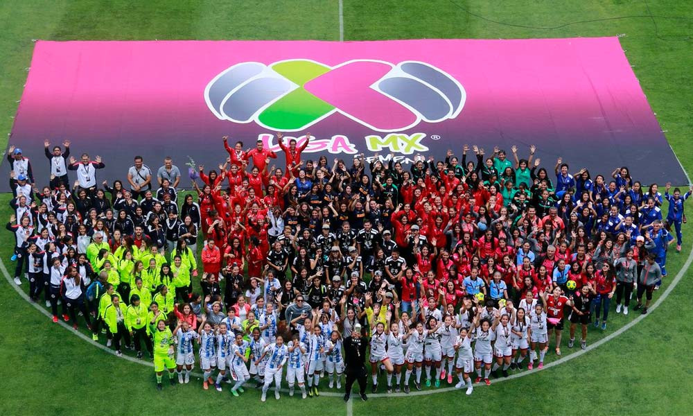

equipos de futbol femenil
liga mx

la liga mx ha implementado la equidad, apoyando a la liga mx femenil,
donde se ha llevado acabo la primera temporada y actualmente se lleva
acabo la segunda temporada, proximamente se jugara la final entre tigres vs monterrey.
equipos
- chivas (actual campeonas)
- monterrey
- tigres
- toluca
- america
- veracruz
- puebla
- queretaro
- pachuca
mejores jugadoras
- belem cruz
- norma palafox
- natalia villarreal
- miriam garcia
- tania morales

- belem cruz
- tigres femenil 18 años
-
- norma palafox
- chivas femenil 18 años
-
- natalia villarreal
- tigres femenil 17 años
-
- miriam garcia
- chivas femenil 17 años
-
- tania morales
- chivas femenil 22 años
-